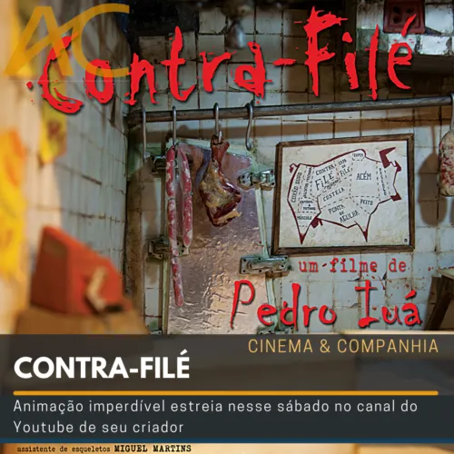
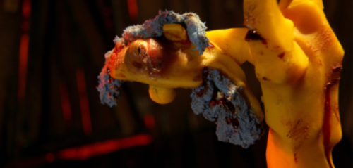
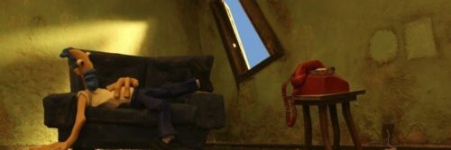

Contra-Filé: um curta brasileiro cheio de personalidade

O curta mostra um personagem desleixado, que é acordado por um estranho no telefone.
O estranho diz que ele já era pra ter sumido dali e diz para que ele compre algumas carnes e queime-as junto
de seus pertences a fim de forjar sua própria morte. O curta é feito inteiramente em stop-motion e é produzido
de forma absurdamente detalhada e bem feita, ainda mais sendo um projeto independente.
Aqui estão mais algumas fotos do curta
 
O curta está disponível para ser assistido gratuitamente no youtube por aqui